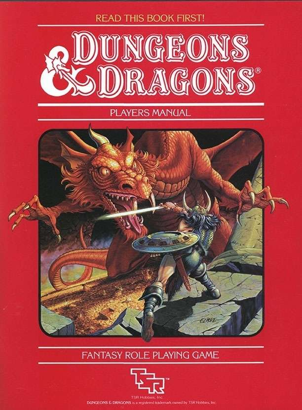

Cos'è Dungeons and Dragons?
Dungeons and Dragons (abbreviato in DnD) è un gioco di ruolo da tavolo di genere fantasy, pubblicato per la prima volta nel gennaio 1974 negli Stati Uniti. Ideato da Gary Gygaxe Dave Arneson, è considerato il primo gioco di ruolo da tavolo commercializzato e uno dei prodotti più influenti nella storia dell'intrattenimento ludico. Il gioco consente ai partecipanti di interpretare personaggi immaginari all'interno di ambientazioni fantastiche, caratterizzate dalla presenza di creature mitologiche, magie, divinità, regni e civiltà immaginarie. Le avventure si sviluppano attraverso la narrazione condivisa, l'interpretazione dei personaggi e un sistema di regole che utilizza dadi poliedrici per determinare l'esito delle azioni.
A differenza dei giochi da tavolo tradizionali, DnD non prevede necessariamente un vincitore o un obiettivo finale prestabilito. I partecipanti collaborano per affrontare missioni, esplorare ambientazioni, risolvere enigmi e combattere avversari, contribuendo allo sviluppo di una storia comune. Una figura fondamentale è rappresentata dal Dungeon Master (DM), ovvero il narratore e arbitro della partita, incaricato di descrivere gli ambienti, interpretare i personaggi non giocanti, presentare le sfide e applicare le regole. Gli altri partecipanti creano invece i propri personaggi, scegliendone caratteristiche, capacità, razza, classe e background narrativo.
Le origini di Dungeons and Dragons risalgono alla seconda metà degli anni Sessanta, negli Stati Uniti, all'interno delle comunità di appassionati di wargame, giochi strategici basati sulla simulazione di battaglie storiche. Gary Gygax, insieme ad altri appassionati, iniziò a sperimentare nuove modalità di gioco che integravano elementi fantasy e combattimenti con miniature. Nel 1971 pubblicò, insieme a Jeff Perren, il regolamento Chainmail, un sistema di combattimento medievale che comprendeva anche un supplemento dedicato a creature fantastiche, maghi e mostri.
Parallelamente, Dave Arneson sviluppò una propria ambientazione chiamata Blackmoor, nella quale i partecipanti non controllavano più interi eserciti, ma singoli personaggi impegnati in avventure continuative. L'incontro tra le sperimentazioni di Arneson e il lavoro di Gygax portò alla creazione di un nuovo sistema di gioco, basato sull'esplorazione, sulla crescita dei personaggi e sulla narrazione collaborativa.
Nel 1973 Gygax fondò, insieme a Don Kaye, la società Tactical Studies Rules (TSR), con l'obiettivo di pubblicare il nuovo prodotto. Nel gennaio 1974 venne distribuita la prima edizione di Dungeons and Dragons, inizialmente stampata in circa 1.000 copie e composta da tre manuali principali. Il gioco si diffuse rapidamente tra gli appassionati di wargame e fantasy, dando origine a un nuovo genere ludico. Nel corso degli anni furono pubblicate numerose edizioni, ambientazioni e integrazioni, contribuendo alla diffusione internazionale del fenomeno. Nel 1997 la TSR venne acquisita da Wizards of the Coast, società che assunse la gestione del marchio e pubblicò successivamente la terza edizione del regolamento nel 2000.
Nel corso degli anni Dungeons and Dragons ha ottenuto numerosi riferimenti e apparizioni nel mondo del cinema e della televisione. Una delle prime apparizioni significative risale al 1982, nel film E.T. l'extra-terrestre diretto da Steven Spielberg, nel quale alcuni protagonisti vengono mostrati mentre partecipano a una partita del gioco. Nello stesso periodo, DnD fu coinvolto nella cosiddetta Satanic Panic, un fenomeno di allarmismo sociale che interessò soprattutto gli Stati Uniti durante gli anni Ottanta. Alcuni gruppi religiosi e associazioni conservatrici accusarono il gioco di promuovere occultismo, stregoneria e satanismo, a causa della presenza di demoni, divinità, rituali magici e creature soprannaturali. Le accuse non furono supportate da evidenze scientifiche attendibili, ma contribuirono a generare un'ampia controversia mediatica.
Un riferimento particolarmente importante nella cultura popolare contemporanea è rappresentato dalla serie televisiva Stranger Things, distribuita da Netflix a partire dal 2016. Nella serie, il gruppo di protagonisti utilizza Dungeons and Dragons come punto di riferimento per interpretare e identificare le creature soprannaturali che incontra. Alcuni nomi, come Demogorgone, Mind Flayer e Vecna, provengono direttamente dall'universo del gioco, sebbene le loro caratteristiche siano state adattate alla narrazione televisiva. La quarta stagione ha inoltre introdotto l'Hellfire Club, un gruppo di appassionati di giochi di ruolo guidato dal personaggio di Eddie Munson, contribuendo a riportare l'attenzione pubblica sul fenomeno dei giochi di ruolo da tavolo.
Tra gli elementi più riconoscibili di DnD figurano i dadi poliedrici, in particolare il dado a venti facce, comunemente chiamato D20, utilizzato per determinare il successo o il fallimento di numerose azioni. Il D20 è diventato uno dei simboli più rappresentativi dell'intero settore dei giochi di ruolo. Altri elementi distintivi sono il logo ufficiale del gioco, caratterizzato da una tipografia fantasy e da un drago stilizzato, le miniature dei personaggi e le illustrazioni presenti nei manuali. Questi elementi hanno contribuito a consolidare un'identità visiva riconoscibile anche al di fuori della comunità dei giocatori.
Dalla sua pubblicazione, Dungeons and Dragons ha esercitato una notevole influenza sul settore dell'intrattenimento, contribuendo allo sviluppo dei giochi di ruolo moderni e influenzando numerosi videogiochi, opere letterarie e produzioni cinematografiche. Meccaniche come i punti esperienza, i livelli, le classi, le statistiche dei personaggi e l'esplorazione dei dungeon sono state riprese e adattate in numerosi videogiochi di genere RPG (Role-Playing Game).
Tra le produzioni videoludiche più conosciute ispirate direttamente al suo universo figurano Baldur's Gate, Neverwinter Nights e Icewind Dale. Parallelamente, la diffusione di piattaforme digitali e servizi di streaming ha favorito la nascita di nuove comunità online, nelle quali le sessioni di gioco vengono trasmesse e seguite da un pubblico internazionale. Un esempio significativo è Critical Role, progetto nato da sessioni di Dungeons and Dragons interpretate da doppiatori professionisti e successivamente trasformato in un fenomeno multimediale.
A oltre cinquant'anni dalla sua prima pubblicazione, Dungeons and Dragons continua a rappresentare uno dei principali riferimenti nel panorama dei giochi di ruolo da tavolo, grazie alla continua evoluzione dei suoi regolamenti, alla varietà delle ambientazioni disponibili e alla possibilità di creare esperienze narrative personalizzate.
